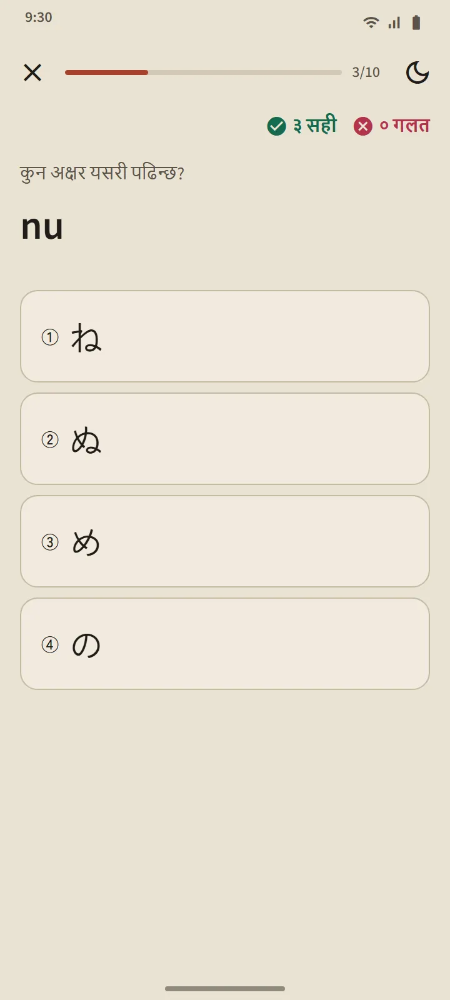

पाठको सूचीसमेत बन्ने तालिका
हिरागाना र काताकाना पृष्ठहरू गृह स्क्रिनको “जापानी भाषाको आधार” खण्डबाट खुल्छन्। माथिको सारांश कार्डले तपाईंलाई थाहा भएका अक्षर गन्छ; तल तालिका तीन समूहमा छ: आधारभूत (46 अक्षर), चिह्न भएका (dakuten र handakuten), र संयुक्त (きゃ, しゅ, ちょ आदि)। भरिएको खानाको अर्थ थाहा भयो, रेखा मात्र भएको खानाको अर्थ प्रगतिमा छ।

हरेक पङ्क्तिको एक पाठ
तालिकाको हरेक पङ्क्ति एउटा पाठ हो: ट्याप गरेर सुन्न मिल्ने अक्षरका खाना, रोमाजी, थाहा भएको चिह्न, हरेक अक्षरको स्ट्रोक क्रम, र “तपाईंले पढ्न सक्ने शब्दहरू”: त्यो पङ्क्तिसम्म सिकिएका अक्षरले मात्र बनेका वास्तविक शब्दकोशका शब्द, जसको रोमाजी बटनपछाडि हुन्छ ताकि तपाईंले पहिला आफैँ पढ्ने प्रयास गर्नुहोस्। “यो पङ्क्तिको क्विज” बटनले पाठ टुङ्ग्याउँछ।

पढ्ने नियम
हरेक तालिकाको अन्तिम समूहले सुरुवातीहरू अलमलिने नियम बुझाउँछ: हिरागानामा सानो っ र लामो स्वर; काताकानामा लामो चिह्न ー, सानो ッ र विदेशी शब्दका संयोजन (ファ, ティ, ウィ)। हरेक नियमसँग तपाईंले पढ्न सक्ने उदाहरण शब्द हुन्छन्।
दस प्रश्नका क्विज, दोहोर्याउने तालिकाबिना
काना क्विजमा तीन प्रकारका प्रश्न आउँछन्: अक्षरबाट रोमाजी, रोमाजीबाट अक्षर, र ध्वनिबाट अक्षर। लगातार तीन सही उत्तरपछि अक्षर थाहा भयो हुन्छ, र गल्ती भए सिक्दै मा फर्कन्छ। शब्द र कान्जीभन्दा फरक, अक्षरहरू दोहोर्याउने तालिकामा राखिँदैनन्: सबै अक्षर पढ्न सक्ने भएपछि तालिका सकिन्छ। क्विजको सारांशले तपाईंको अङ्क, नयाँ थाहा भएका अक्षर, र छुटेकाहरू देखाउँछ।

कहाँबाट सुरु गर्ने
एप पहिलो पटक खोल्दा तपाईं शून्यदेखि सुरु गर्दै हुनुहुन्छ कि हिरागाना पढ्न आउँछ भनेर सोधिन्छ। तपाईंको उत्तरले गृहमा एउटा सुझाव तय गर्छ: शुरुआतीका लागि "हिरागानाबाट सुरु गर्नुहोस्", अरूका लागि पहिलो 20 शब्द। पूरा गर्नुपर्ने कुनै सूची छैन: त्यही कार्डले सबै सुविधाको छोटो ट्युटोरियलमा लैजान्छ, र जुनसुकै बेला बन्द गर्न सकिन्छ।